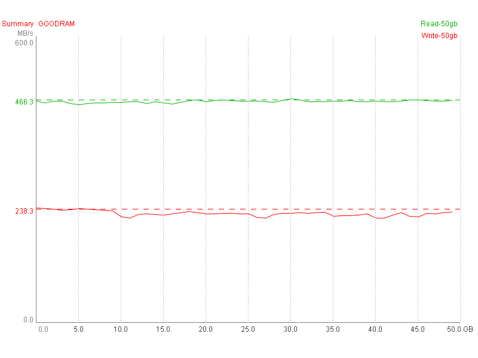
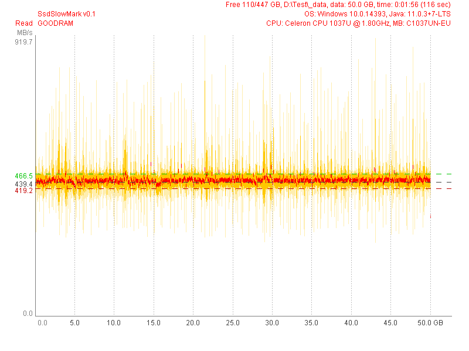
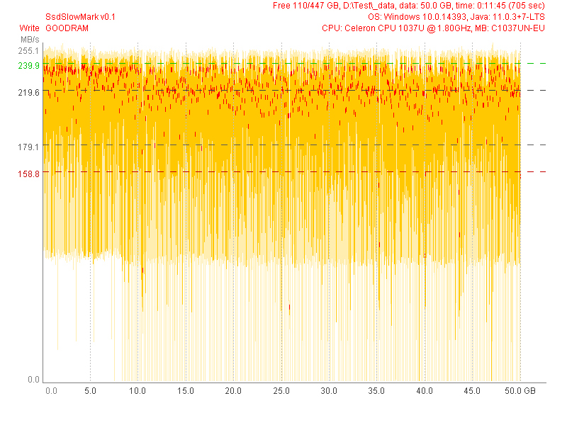

GOODRAM (Test 50 GB) |
|
| SsdSlowMark v0.1, CPU: Celeron CPU 1037U @ 1.80GHz, MB: C1037UN-EU, OS: Windows 10.0.14393, Java: 11.0.3+7-LTS | |
| Read Performance | Write Performance |
avg.max: 439.4 MB/s, 99.9% (49.9 GB)
mid: 324.5 MB/s, 0.6% (0.3 GB)
min: 243.3 MB/s, 0.1% (0.1 GB)
typ.max: 466.5 MB/s, 99.9% (49.9 GB)
typ.min: 419.2 MB/s, 100.0% (50.0 GB)
|
avg.max: 219.6 MB/s, 98.1% (49.1 GB)
mid: 179.1 MB/s, 30.4% (15.2 GB)
min: 103.0 MB/s, 0.6% (0.3 GB)
typ.max: 239.9 MB/s, 93.5% (46.8 GB)
typ.min: 158.8 MB/s, 3.4% (1.7 GB)
|
|  | |
|  | |
|  | |